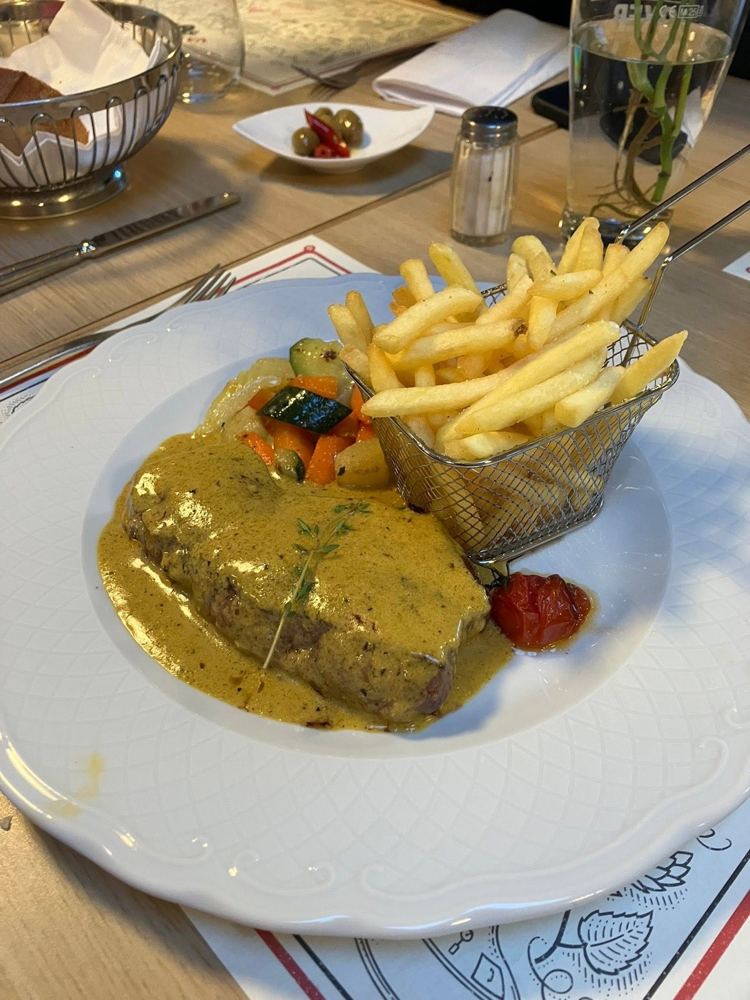
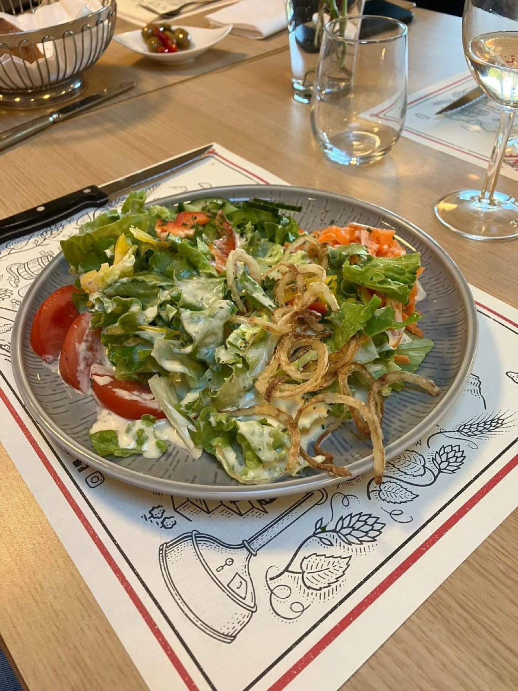
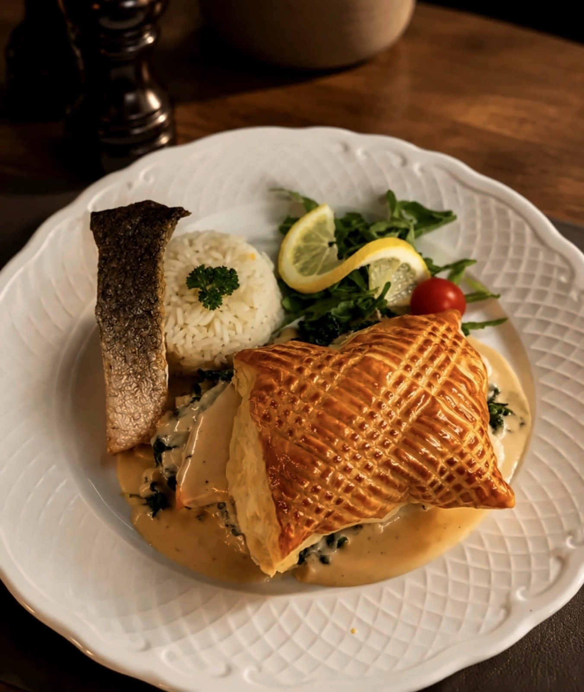
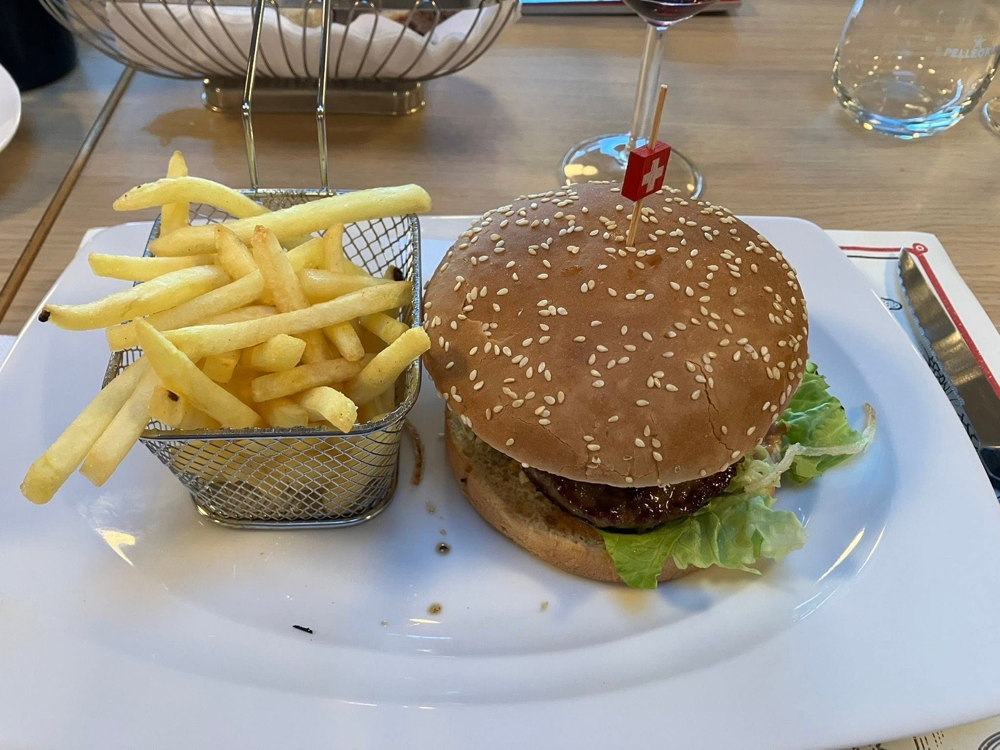
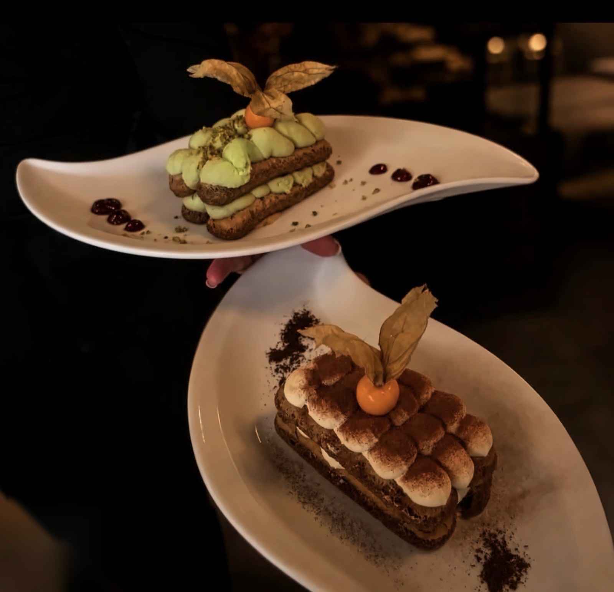

RestaurantTennis ClubÉcublens
À table
-

-

-

-

-


Neuf pizzas,
et la pâte faite ici
De la margherita à quinze francs à la Tennis — cherry, roquette, jambon cru sur base blanche. À côté : huit pâtes, deux risottos et trois foccacias.
C’est la moitié de la maison, et elle a sa page. Les pizzas se font aussi à l’emporter.
Les plats qui portent l’étoile
Sur la carte imprimée, une étoile marque les plats de la maison. Voici dix des seize.
-
Expérience clubhouse
Plateau entrecôte Café de Paris
42.—
-
Le coup puissant
90.— à 120.—
-
Le capitaine
39.—
-
Le smash
Risotto aux crevettes & safran
28.—
-
Le bon coup
Entrecôte de cheval au Café de Paris
26.—
-
Signature Écublens
26.—
-
Tie-break
24.—
-
Écublens signature
24.—
-
Simple & bon
Saucisse de veau du boucher aux oignons
20.—
-
Point décisif
20.—